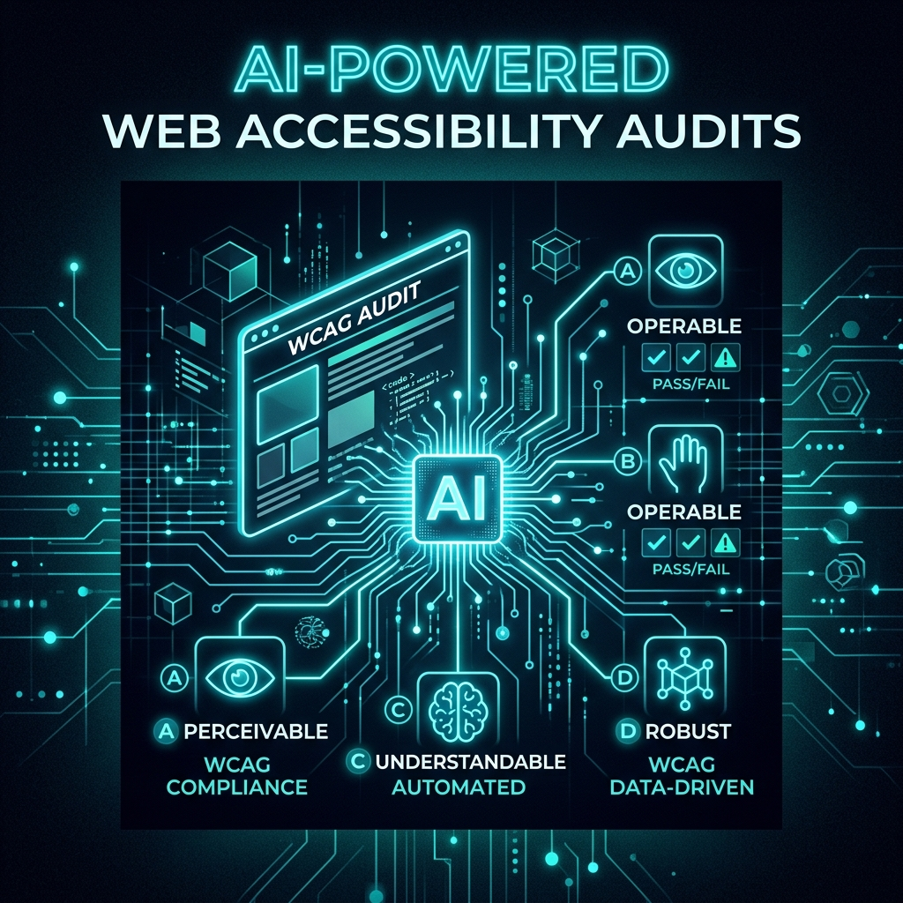

Impacto de la Inteligencia Artificial en la automatización de auditorías WCAG
Exploramos cómo los modelos de lenguaje pueden asistir en la detección de problemas complejos de accesibilidad y las limitaciones actuales frente a la evaluación humana especializada.

El enfoque "Shift Left" (desplazar las pruebas hacia las etapas tempranas del ciclo de desarrollo) se ha posicionado como el camino correcto para garantizar productos digitales robustos. Es una visión técnica muy potente que, bien refinada, nos permitirá escalar significativamente la calidad de nuestras entregas. Al adoptar este enfoque en la accesibilidad, dejamos de tratar las auditorías WCAG como un cuello de botella al final del proceso, para convertirlas en un pilar del diseño y desarrollo.
La Brecha entre la IA y la Accesibilidad Dinámica
Sin embargo, desde la perspectiva estricta de QA y accesibilidad, todavía enfrentamos una brecha importante en la automatización. La Inteligencia Artificial y los Modelos de Lenguaje Grande (LLMs) son excelentes analizando la semántica estática del HTML, pero en proyectos reales modernos construidos con React, Angular o Vue, la accesibilidad es principalmente dinámica.
La reactividad del DOM y la gestión compleja de estados hacen que los nodos aparezcan y desaparezcan constantemente, que el foco del teclado deba ser reasignado programáticamente, y que las regiones en vivo (aria-live) emitan anuncios asíncronos. Es precisamente en este escenario de interacción fluida donde la IA generalista aún tiene dificultades para entender la intención real del usuario y validar la lógica de navegación compleja sin intervención humana.
Refinando los Steering Files para la IA
Para intentar cerrar esa brecha, propongo la revisión exhaustiva y la inyección de criterios de accesibilidad en los "Steering Files" o archivos de dirección (.agents / .md) utilizados para contextualizar a los asistentes de IA, como GitHub Copilot. Mi objetivo es aportar criterios específicos basados en las incidencias recurrentes y las barreras de accesibilidad críticas que detectamos a diario en las auditorías.
name: Accessibility QA Agent
description: "Audits DOM output for WCAG 2.2 compliance in dynamic states"
rules:
- Ensure all actionable elements have sufficient color contrast (min 4.5:1).
- Validate aria-live regions are used for async state updates.
- Keyboard focus must not be trapped in modals.Al proporcionar a la IA un contexto compartido que incluya patrones de diseño accesibles (como la correcta implementación de ARIA, gestión del foco y soporte para lectores de pantalla en componentes interactivos), logramos que las directrices del código generado sean mucho más robustas ante comportamientos dinámicos, previniendo errores desde la escritura misma del código.
Delegación de Tareas: Agentes Especializados
He estado siguiendo de cerca el proyecto de código abierto Community-Access/accessibility-agents (Se abre en una nueva pestaña), el cual está ganando mucha tracción por su alta compatibilidad con herramientas de asistencia de código. Este proyecto propone un enfoque fascinante: la delegación de tareas a distintos agentes de IA especializados.
En lugar de un solo agente intentando auditar todo, existen sub-agentes enfocados exclusivamente en contraste de color, otros en semántica ARIA, y otros en navegación por teclado. Estos hallazgos luego son filtrados y consolidados por un "Accessibility Lead" algorítmico. Considero que extraer aprendizajes de esta arquitectura modular para nuestras propias convenciones de creación de Documentos de Diseño de Software (SDD) podría ser un salto cualitativo en la forma en que auditamos y diseñamos la accesibilidad.
Próximos Pasos
Avanzar hacia una automatización inteligente requiere que alimentemos a las herramientas con las directrices correctas. Coordinar esta revisión de los steering files es fundamental para asegurar que nuestro "contexto compartido" con la IA cubra realmente los escenarios de interacción más críticos para los usuarios con discapacidad, logrando que el "Shift Left" sea una realidad tangible y no solo un concepto teórico.